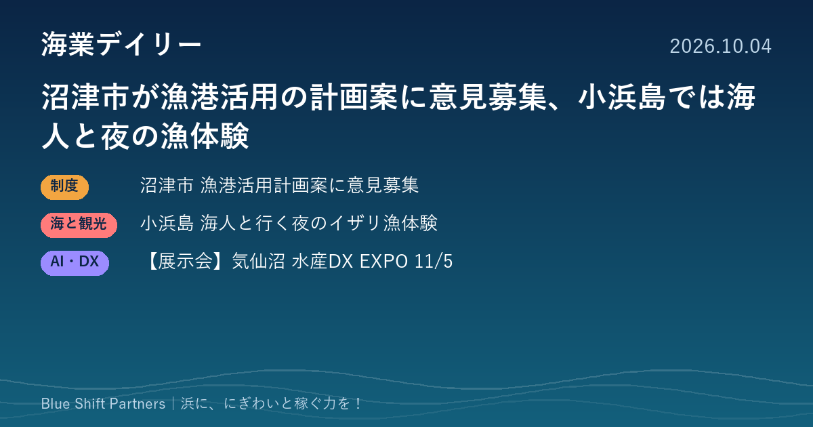

2026.10.04
沼津市が漁港活用の計画案に意見募集、小浜島では海人と夜の漁体験

静岡県沼津市が、漁港施設等活用事業の推進に関する計画（案）への意見募集を10月31日まで行っています。沖縄・小浜島では地元の海人が案内する夜の漁体験が始まり、11月には気仙沼で水産DXの展示会が開かれます。
沼津市、漁港施設等活用事業の推進計画（案）に10月31日まで意見募集
静岡県沼津市は、「漁港施設等活用事業の推進に関する計画（活用推進計画）（案）」について、令和8年10月1日から10月31日まで市民等の意見を募集しています。令和5年の漁港漁場整備法の改正で、漁港区域で宿泊・飲食・マリンレジャーなどの事業を行えるようになったことを受け、地域の所得向上と海業の振興を進めるための計画です。意見は市内在住・在勤・在学の方、市内に事業所を持つ個人・法人、利害関係者が、郵送・ファクス・持参・電子メールで提出できます（担当：沼津市産業振興部水産海浜課）。
ここがポイント：活用推進計画は、民間事業者が漁港の施設や用地を使って事業を行うための土台になります。漁港での飲食や体験事業を考えている地元の事業者は、計画案の段階で中身を確認し、意見を出しておく好機です。
出典：沼津市「漁港施設等活用事業の推進に関する計画（活用推進計画）（案）」意見募集（2026-10-01）
沖縄・小浜島で、地元の海人と夜の礁池を歩く「イザリ漁」体験
沖縄県竹富町・小浜島のリゾート「はいむるぶし」は、体験プログラム「Yaeyama Journey」の第二弾として、細崎（くばさき）の海人（うみんちゅ）と夜の礁池（イノー）を探検するイザリ漁体験を発表しました。期間は2026年10月24日から12月24日までの大潮の夜で、ヘッドライトの明かりで夜の海の生きものを観察しながらタコなどを探します。料金は12歳以上1人10,800円（税込、ガイド料・安全装備込み）です。
ここがポイント：漁師が案内役となり、昔ながらの漁を観光体験にした例です。宿泊施設と地元の漁業者が組むことで、漁業者には新しい収入源が、宿には他にない体験商品が生まれます。
出典：株式会社はいむるぶし プレスリリース（PR TIMES）（2026-09-30）
【展示会】気仙沼市水産DX EXPO 2026、11月5日に開催（入場無料・事前登録制）
気仙沼市デジタル水産業推進協議会と気仙沼市は、「気仙沼市水産DX EXPO 2026」を11月5日（木）10時から17時まで、気仙沼中央公民館（宮城県気仙沼市）で開きます。入場は無料ですが、事前登録が必要です。主催者によると市内外から60を超える企業・団体が出展し、基調講演3件のほか、ドローンや遠隔作業支援などの実演・体験も行われます。
ここがポイント：水産の現場で使えるデジタル技術を一度に見比べられる機会です。漁協や水産加工の事業者は、自分の浜の課題に合う機器やサービスを探す場として、自治体の担当者は他地域の取り組みを知る場として使えます。
出典：気仙沼市デジタル水産業推進協議会「気仙沼市水産DX EXPO 2026」公式ページ（2026-09-28）
沼津市のように、漁港を民間の事業に開くための計画づくりが各地で進んでいます。計画ができてから動くのではなく、案の段階で「この施設をこう使いたい」と声を上げておくことが、浜の事業者にとって最初の一歩になります。小浜島の例のように、漁師の知恵そのものが観光の商品になることも忘れずにいたいところです。